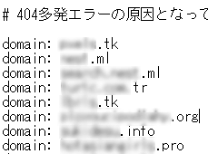

無料ドメインからのリンクは否認すべきか？
ここ最近、ネガティブSEOを受けるケースが多くなってきており、Search Cosoleのリンク否認ツールで対処しているのですが、「.tk」や「.ml」などの無料ドメインからの被リンクが多い傾向にあります。

無料ドメインを利用してコンテンツの薄いサイトを構築し、そこから自サイトの存在しないページにリンクされており、インデックスされた時点でドメインごと削除してしまうパターンが多いです。
そのため、自サイトのSearch Cosoleではエラーが多発してしまうものの、リンク元を確認してみると404で既にページが存在しない状態となってしまいます。
これが元で一時的に検索順位へネガティブな影響が出てしまっているケースが多いと感じています。
これを無料ドメインを変えて定期的に繰り返されますので、常にネガティブな影響を受けてしまう状態となるわけです。
最初のうちは被リンク元を慎重にチェックしてはいたのですが、僕の場合は例外なく100%同じパターンなのでこれらの無料ドメインを見つけ次第、ドメインごと否認することにしました。
「.tk」や「.ml」などの無料ドメインからの被リンクはほぼ100%の確率でネガティブSEOによる被リンクのため、一括で否認するようにしています。また、こちらは無料かどうかは不明ですが、「.tr」や「.link」、あるいは「.pw」などのドメインもネガティブSEOで使用されているケースが多いです。
なぜ、このようなドメインがネガティブSEOに利用されるのかを考えますと、単純に無料だからという理由になるかと思いますが、独自ドメインのため、無料ではあってもインデックスされやすいものと思われます。
いっそのこと、「.tk」などのドメインの種類ごと否認できればよいと思うのですが、リンク否認ツールではそういったことは出来ないように感じました。
このような事例から考えますと、いずれ「.tk」や「.ml」などの無料ドメインからの被リンクは機械的に無効化されるように感じておりまして、これらのドメインを使用してメインサイトを構築するのは考え物だなと感じています。
やはり、「.com」や「.net」などの一般的なドメインを使ってサイトを構築するのが一番よいのかもしれません。